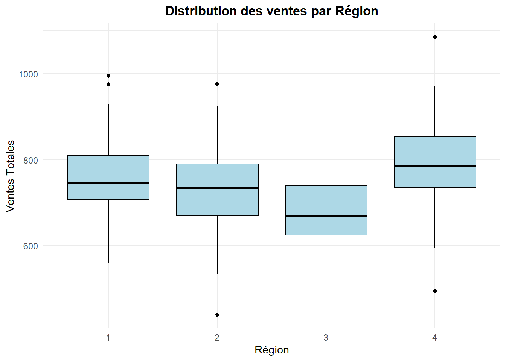
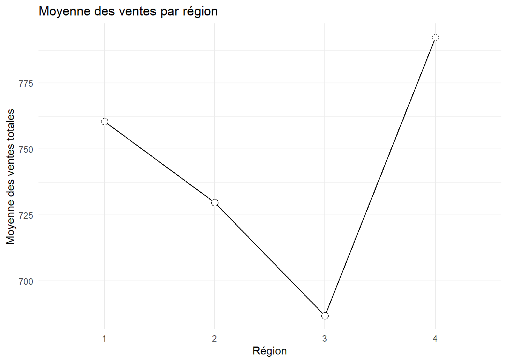
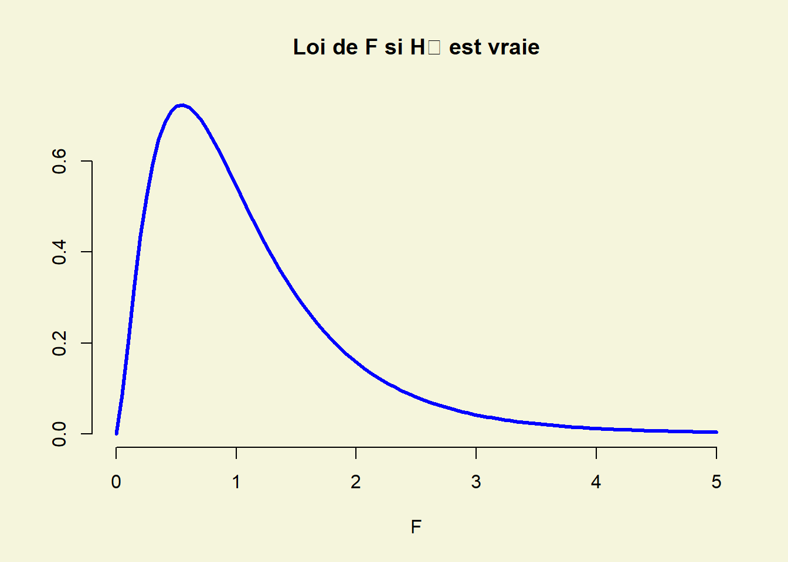
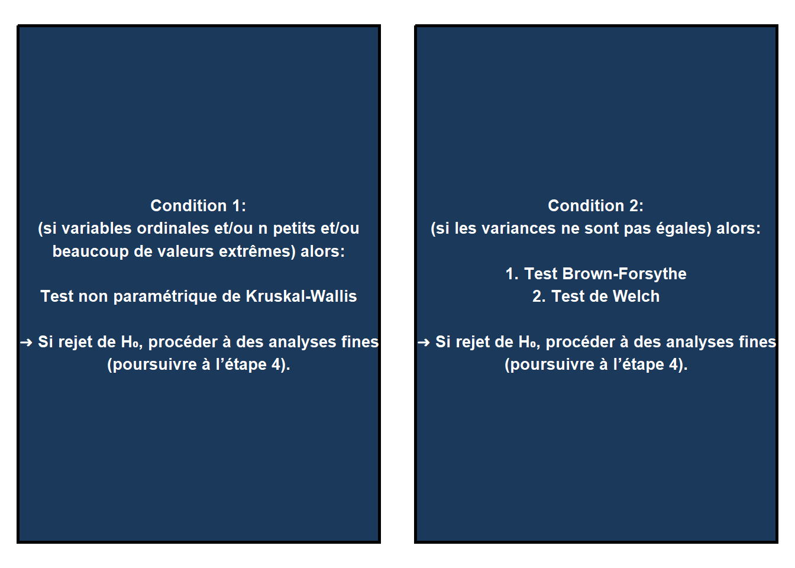
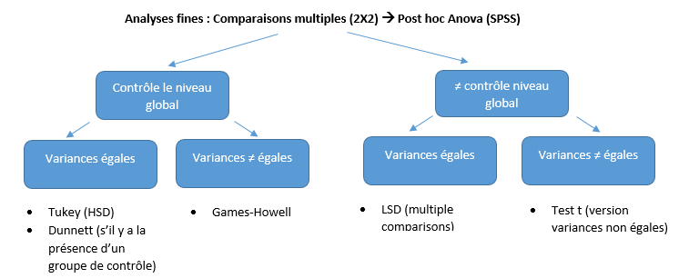

| Nom_Variable | Description |
|---|---|
| Transaction | Numéro de la transaction |
| Région | Région d’emplacement du magasin (Est = 1, Nord = 2, Sud = 3, Ouest = 4) |
| Publicité | Période de campagne publicitaire (Oui = 1, Non = 0) |
| Sexe | Sexe du client (Homme = 1, Femme = 2) |
| Ventes_musique | Ventes dans le département de musique (ventes de CD) |
| Ventes_livres | Ventes dans le département des livres |
| Ventes_électronique | Ventes dans le département de l’électronique |
| Ventes_totales | Total des ventes |
Thème 3: ANOVA à un facteur
Comparaison de plusieurs moyennes pour échantillons indépendants: ANOVA à 1 facteur
Mise en situation 1
Un responsable du service des ventes d’une grande chaine de magasins s’intéresse à évaluer le niveau de ventes totales à travers les régions.
Données
Le gestionnaire dispose d’un échantillon de 200 transactions effectuées au courant de l’année.
Variables
Le fichier « Ventes.csv » contient des données relatives à cette mise en situation.
# Définir le répertoire de travail
setwd("C:/Users/Fatou/OneDrive - HEC Montréal/PROJET SUPERVISE/Data")
# Charger les données
ventes = read.csv("Ventes.csv", sep=";", header=TRUE)
#Convertir les variables en facteur
ventes$Région = as.factor(ventes$Région)
ventes$Publicité = as.factor(ventes$Publicité)
ventes$sexe = as.factor(ventes$sexe)Statistiques descriptives
# Calcul des statistiques descriptives des ventes totales par région
library(dplyr)
stat_desc_region = ventes %>%
group_by(Région) %>%
summarise(
N = n(),
Moyenne = mean(ventes_totales, na.rm = TRUE),
Ecart_Type = sd(ventes_totales, na.rm = TRUE),
Erreur_Standard = Ecart_Type / sqrt(N),
Borne_inf = Moyenne - 1.96 * Erreur_Standard,
Borne_sup = Moyenne + 1.96 * Erreur_Standard,
Minimum = min(ventes_totales, na.rm = TRUE),
Maximum = max(ventes_totales, na.rm = TRUE)
)
#Afficher les résultats
print(stat_desc_region)# A tibble: 4 × 9
Région N Moyenne Ecart_Type Erreur_Standard Borne_inf Borne_sup Minimum
<fct> <int> <dbl> <dbl> <dbl> <dbl> <dbl> <int>
1 1 36 760. 106. 17.6 726. 795. 560
2 2 69 730. 101. 12.2 706. 754. 440
3 3 45 687. 83.5 12.4 663. 711. 515
4 4 50 792. 101. 14.3 764. 820. 495
# ℹ 1 more variable: Maximum <int># Création d'un boxplot pour visualiser la distribution des ventes totales par région
library(ggplot2)
ggplot(ventes, aes(x = Région, y = ventes_totales)) +
geom_boxplot(fill = "lightblue", color = "black") +
labs(title = "Distribution des ventes par Région",
x = "Région",
y = "Ventes Totales") +
theme_minimal() +
theme(
plot.title = element_text(hjust = 0.5, face = "bold")
)
# Calcul de la moyenne des ventes totales par région
vente = ventes %>%
group_by(Région) %>%
summarise(Moyenne_vente = mean(ventes_totales, na.rm = TRUE))
# Création d'un graphique en ligne pour représenter la moyenne des ventes par région
ggplot(vente, aes(x = Région, y = Moyenne_vente, group = 1)) +
geom_line(color = "black") + # Ligne noire reliant les points
geom_point(color = "black", fill = "white", shape = 21, size = 3) +
labs(title = "Moyenne des ventes par région",
x = "Région",
y = "Moyenne des ventes totales") +
theme_minimal()
Cadre théorique
\[ \begin{aligned} K \text{ niveaux :} & \quad 1 \quad 2 \quad \dots \quad K \\ \text{Variable :} & \quad Y_1 \quad Y_2 \quad \dots \quad Y_K \\ \text{Moyenne :} & \quad \mu_1 \quad \mu_2 \quad \dots \quad \mu_K \\ \text{Variance :} & \quad \sigma_1^2 \quad \sigma_2^2 \quad \dots \quad \sigma_K^2 \end{aligned} \]
Les niveaux des facteurs définissent les K populations ou groupes (dans l’exemple…)
\[ H_0 : \mu_1 = \mu_2 = \dots = \mu_K \quad\text{vs. }\quad H_1 : \text{au moins 2 moyennes sont différentes} \]
Dans notre exemple:
La variable dépendante = Ventes totales Le facteur = région ( 4 niveaux)
Test classique: Le Test de Fisher
Les conditions d’utilisation du Test F:
\[ \begin{aligned} 1.\quad & \text{Les } Y_i \text{ suivent une loi normale } \mathbf{ou} \text{ les tailles d’échantillons sont assez grandes.} \\ 2.\quad & \sigma_1^2 = \sigma_2^2 = \dots = \sigma_K^2 = \sigma^2 \quad \textbf{: homogénéité des variances.} \\ 3.\quad & \text{Les } K \text{ échantillons sont prélevés de manière } \mathbf{indépendante.} \end{aligned} \]
Prélever K échantillons indépendants :
\[ \begin{array}{c|cccc} & 1 & 2 & \dots & K \\ \hline \textbf{Taille} & n_1 & n_2 & \dots & n_K \\ \textbf{Observations} & Y_{11}, Y_{12}, \dots, Y_{1n_1} & Y_{21}, Y_{22}, \dots, Y_{2n_2} & \dots & Y_{K1}, Y_{K2}, \dots, Y_{Kn_K} \\ \textbf{Moyenne} & \overline{Y}_1 & \overline{Y}_2 & \dots & \overline{Y}_K \\ \textbf{Variance} & s_1^2 & s_2^2 & \dots & s_K^2 \end{array} \]
Décomposition de la variabilité totale : SSc = SSg + SSe
\[ \begin{array}{|l|l|} \hline \textbf{Variabilité totale autour de la moyenne globale :} & SS_c = \sum \sum (Y_{ij} - \overline{Y})^2 \\ \hline \textbf{Variabilité expliquée par le facteur (inter-groupe) :} & SS_g = \sum n_i (\overline{Y}_i - \overline{Y})^2 \\ \hline \textbf{Variabilité due à l’erreur (intra-groupe) :} & SS_e = \sum \sum (Y_{ij} - \overline{Y}_i)^2 \\ \hline \end{array} \]
\[ \textbf{Statistique du test :} \quad F = \frac{SS_g / (K-1)}{SS_e / (N-K)} \quad \text{où } (N = n_1 + n_2 + \dots + n_K) \]
Test F de Fisher
Si H₀ est vraie, on s’attend à ce que la variabilité entre les différents groupes soit faible, i.e. à ce que F soit petit.
Si H₀ est vraie, F ~ Fisher à (K-1) et (N-K) degrés de liberté.

1.Vérification de la condition 2: Homogénéité des variances
\[ H_0: \sigma^2_1 = \sigma^2_2 = \sigma^2_3 = \sigma^2_4\quad \text {vs.}\quad\ H_1: \text{au moins deux variances non égales} \]
# Chargement du package car pour effectuer le test de Levene
library(car)
# Test de Levene pour vérifier l'homogénéité des variances des ventes totales entre les régions
leveneTest(ventes_totales ~ Région, data = ventes, center=mean)Levene's Test for Homogeneity of Variance (center = mean)
Df F value Pr(>F)
group 3 0.4041 0.7502
196 La p-value=0.750 >0.05, on ne rejette pas H₀. On peut donc supposer l’égalité des variances entre les groupes.
La condition 2 est respectée.
Les conditions 1 et 3 le sont également. En effet, les 4 groupes sont indépendants et les tailles des échantillons sont assez grandes (>30, TCL) pour justifier l’utilisation du test F.
2.Comparaison des moyennes des 4 groupes
\[ H_0: \mu_1 = \mu_2 = \mu_3 = \mu_4\quad \text {vs.}\quad\ H_1: \text{au moins deux moyennes non égales} \]
Résultat du Test-F:
# ANOVA pour tester l'effet de la région sur les ventes totales
anova_region = aov(ventes_totales ~ Région, data = ventes)
summary(anova_region) Df Sum Sq Mean Sq F value Pr(>F)
Région 3 286095 95365 9.893 4.19e-06 ***
Residuals 196 1889367 9640
---
Signif. codes: 0 '***' 0.001 '**' 0.01 '*' 0.05 '.' 0.1 ' ' 1Le rejet de H₀ avec le test F(p-value=0 < 0.05) indique seulement que les moyennes des populations de référence ne sont pas égales. Il y a au moins deux moyennes différentes mais rien ne nous indique spécifiquement où résident les différences.
Importance de l’effet du facteur
Si on rejette H₀ ,on peut être intéressé à mesurer « l’importance » de l’effet du facteur région.
\[ \eta^2 = \frac{SS_g}{SS_c} = \frac{\sum_{i=1}^{K} n_i (\overline{Y}_i - \overline{Y})^2}{\sum \sum (Y_{ij} - \overline{Y})^2} \quad \text{( « eta squared » - varie de 0 à 1 )} \]
Dans cet exemple, 13.15% de la variabilité observée dans les ventes totales est expliquée par le facteur région.
On poursuivra avec des analyses plus fines des résultats en effectuant des comparaisons multiples (comparaisons des groupes 2 à 2, comparaisons de tous les groupes avec un groupe de contrôle ou contrastes).
Que faire si les conditions du Test-F ne sont pas satisfaites ?
Condition 2 :
\[
\sigma_1^2 = \sigma_2^2 = \dots = \sigma_K^2 = \sigma^2 \quad (\text{constante})
\]
Si les variances des k populations ne sont pas égales (rejet de H₀: homogénéité de la variance), on ne peut plus se fier à la loi Fisher pour approcher la distribution de la statistique du test F (ni aux p-value qui en découlent).
Alternative du test F
Si les tailles des échantillons sont assez grandes,
on suggère, en pareil cas, d’utiliser les tests de Brown-Forsythe et de Welch.
#install.packages("onewaytests")
#Installer la librairie nécéssaire
library(onewaytests)
# Test de Brown-Forsythe
test_brown_forsythe = bf.test(ventes_totales ~ Région, data = ventes)
Brown-Forsythe Test (alpha = 0.05)
-------------------------------------------------------------
data : ventes_totales and Région
statistic : 9.914307
num df : 3
denom df : 170.1677
p.value : 4.644909e-06
Result : Difference is statistically significant.
------------------------------------------------------------- # Test de Welch pour comparer les moyennes des ventes entre les régions (sans supposer l'égalité des variances)
welch_test = oneway.test(ventes_totales ~ Région, data = ventes, var.equal = FALSE)
# Afficher les résultats
#print(test_brown_forsythe)
print(welch_test)
One-way analysis of means (not assuming equal variances)
data: ventes_totales and Région
F = 10.971, num df = 3.000, denom df = 98.779, p-value = 2.789e-06Que faire si les conditions du Test-F ne sont pas satisfaites ?
Condition 1 : Les Yi sont de loi normale ou les tailles d’échantillons sont assez grandes.
Si la condition 1 n’est pas satisfaite, le test non-paramétrique de Kruskal-Wallis (basé sur les rangs des observations) peut s’avérer plus puissant que le test F. De plus, le test F, tout comme le test T, est sensible aux valeurs extrêmes et n’est pas vraiment adéquat pour des variables ordinales.
En pareils cas, on suggère donc d’utiliser le Test de Kruskal Wallis. Ce test se base sur le rang des observations des K échantillons (k niveaux du facteur) combinés (généralisation du test MWW vu à la séance 2).
Remarque : Si les tailles d’échantillons ne sont pas assez grandes et / ou si la variable dépendante est ordinale et / ou présence de beaucoup de valeurs extrêmes, alors on fait le Test de Kruskal Wallis H.
Le Test de Kruskal Wallis:
# Test de Kruskal Wallis pour comparer la distribution des ventes totales entre les régions
test_kruskal = kruskal.test(ventes_totales ~ Région, data = ventes)
# Affichage des résultats du test
print(test_kruskal)
Kruskal-Wallis rank sum test
data: ventes_totales by Région
Kruskal-Wallis chi-squared = 29.31, df = 3, p-value = 1.927e-06Remarque : Si H₀ est vraie, la statistique KW obéit à une loi du Khi-deux à (k-1) degrés de liberté. La p-value donnée dans R est basée sur cette approximation.
Analyse fine des résultat
Le rejet de H₀ avec le test F (ou un autre test) indique seulement que les moyennes des populations ne sont pas toutes égales, c’est-à-dire qu’il y en a au moins deux qui sont différentes. Cela ne nous dit toutefois pas spécifiquement où se situent les différences, et dans quel sens.
Comparer 2 à 2 toutes les paires de moyennes :
\[ \text{Tests} \quad H_0: \mu_i = \mu_j \quad \text{vs} \quad H_1: \mu_i \neq \mu_j \]
\[ \text{Intervalles de confiance pour toutes les différences } \mu_i - \mu_j. \]
(Avec K groupes : K(K −1)/2 tests et intervalles de confiance)
Problème qui survient lorsque plusieurs tests de même seuil de signification α (par exemple 5%) sont effectués dans une même étude :
Seuil global des tests effectués
= probabilité de rejeter H₀ au moins une fois (si H₀ est vraie).
Pour r tests de même seuil de signification α, le seuil global sera égal à 1 - (1 - α)r :
Par exemple:
| Nb..Comparaisons.indep...r. | X1 | X2 | X3 | X4 | X5 | X6 | X7 | X8 | X9 | X10 |
|---|---|---|---|---|---|---|---|---|---|---|
| Niv. conf. global (1-α) | 0.95 | 0.9025 | 0.8574 | 0.8145 | 0.7738 | 0.7351 | 0.6983 | 0.6634 | 0.6302 | 0.5987 |
| Seuil global (α) | 0.05 | 0.0975 | 0.1426 | 0.1855 | 0.2262 | 0.2649 | 0.3017 | 0.3366 | 0.3698 | 0.4013 |
Méthode de comparaison multiple
Il existe de nombreuses méthodes qui permettent d’effectuer plusieurs tests ou construire plusieurs intervalles de confiance en contrôlant le niveau global.
Certaines sont très simples et applicables dans à peu près n’importe quel contexte comme la méthode (ou correction) de Bonferroni qui consiste simplement à ajuster le seuil de chaque test en divisant le seuil global par le nombre de tests à effectuer.
D’autres sont spécifiques à la comparaison 2 à 2 des groupes dans une ANOVA.
Comparaisons multiples permettant de contrôler le niveau global de tous les tests
Si les variances des populations sont égales :
Pour comparer 2 à 2 toutes les moyennes (K(K −1)/2 tests) : Méthode de Tukey (HSD)
Pour comparer avec un groupe de contrôle (K-1 tests) : Méthode de Dunnett
Si les variances des populations ne sont pas toutes égales :
Pour comparer 2 à 2 toutes les moyennes : Méthode de Games-Howell
Méthodes Tukey et Games-Howell
# Définir un miroir CRAN
#options(repos = c(CRAN = "https://cran.rstudio.com/"))
# Charger les packages nécessaires pour Tukey Test et pour games_howell_test
#install.packages("multcomp")
library(multcomp)
#install.packages("rstatix")
library(rstatix) # Test post-hoc de Tukey pour comparer les moyennes des ventes entre les régions
tukey = TukeyHSD(anova_region)
# Affichage des résultats du test de Tukey
print(tukey) Tukey multiple comparisons of means
95% family-wise confidence level
Fit: aov(formula = ventes_totales ~ Région, data = ventes)
$Région
diff lwr upr p adj
2-1 -30.63406 -82.94002 21.671900 0.4289260
3-1 -73.52778 -130.41534 -16.640217 0.0053325
4-1 31.98333 -23.62569 87.592359 0.4452826
3-2 -42.89372 -91.64140 5.853958 0.1062310
4-2 62.61739 15.36800 109.866785 0.0040153
4-3 105.51111 53.23505 157.787172 0.0000026# Test de Games-Howell pour comparer les moyennes des ventes entre les régions sans supposer l'homogénéité des variances
games_howell = games_howell_test(ventes, ventes_totales ~ Région, conf.level = 0.95, detailed = FALSE)
# Affichage des résultats du test de Games-Howell
print(games_howell)# A tibble: 6 × 8
.y. group1 group2 estimate conf.low conf.high p.adj p.adj.signif
* <chr> <chr> <chr> <dbl> <dbl> <dbl> <dbl> <chr>
1 ventes_totales 1 2 -30.6 -86.9 25.7 4.83e-1 ns
2 ventes_totales 1 3 -73.5 -130. -16.7 6 e-3 **
3 ventes_totales 1 4 32.0 -27.6 91.5 4.96e-1 ns
4 ventes_totales 2 3 -42.9 -88.3 2.51 7.1 e-2 ns
5 ventes_totales 2 4 62.6 13.7 112. 6 e-3 **
6 ventes_totales 3 4 106. 55.9 155. 1.48e-6 **** Méthode de Dunnett
Supposons qu’on fixe la région 4 comme groupe de contrôle et qu’on veuille vérifier si les ventes moyennes dans les trois autres régions sont différentes des ventes moyennes de la région 4.
Tests à effectuer
Dans ce contexte, on a seulement 3 tests à effectuer (K-1 tests).
Exercice
Formuler les tests d’hypothèses correspondants à la comparaisons de moyennes par rapport au groupe contrôle.
# Charger les packages nécessaires pour Dunette Test
#install.packages("DescTools")
library(DescTools) # Test de Dunnett pour comparer chaque région à la région 4
dunnett_test = DunnettTest(ventes$ventes_totales, ventes$Région, control = "4")
# Afficher les résultats
print(dunnett_test)
Dunnett's test for comparing several treatments with a control :
95% family-wise confidence level
$`4`
diff lwr.ci upr.ci pval
1-4 -31.98333 -82.83187 18.86520 0.3154
2-4 -62.61739 -105.82193 -19.41285 0.0021 **
3-4 -105.51111 -153.31201 -57.71022 1.3e-06 ***
---
Signif. codes: 0 '***' 0.001 '**' 0.01 '*' 0.05 '.' 0.1 ' ' 1Comparaisons multiples sans contrôler le niveau global de tous les tests
Dans certains contextes d’études exploratoires ou d’analyses préliminaires il n’est pas nécessaire de contrôler le niveau global de tous les tests. Dans pareil cas:
Si les variances des populations sont égales : Méthode LSD
Si les variances des populations ne sont pas toutes égales : Test-T (vu antérieurement)
Méthode LSD
#Charger la librairie emmeans
library(emmeans)
# Test LSD pour comparer les moyennes des ventes entre les régions
lsd_test <- pairs(emmeans(anova_region, ~ Région), adjust = "none")
# Afficher les résultats
summary(lsd_test, infer = TRUE) contrast estimate SE df lower.CL upper.CL t.ratio p.value
Région1 - Région2 30.6 20.2 196 -9.18 70.4 1.518 0.1307
Région1 - Région3 73.5 22.0 196 30.23 116.8 3.349 0.0010
Région1 - Région4 -32.0 21.5 196 -74.31 10.3 -1.490 0.1377
Région2 - Région3 42.9 18.8 196 5.79 80.0 2.280 0.0237
Région2 - Région4 -62.6 18.2 196 -98.58 -26.7 -3.434 0.0007
Région3 - Région4 -105.5 20.2 196 -145.30 -65.7 -5.230 <.0001
Confidence level used: 0.95 Méthode Test-T du thème précédent
Remarque : On fait la méthode du Test-T pour chaque paire de comparaison. On a 4 regions, donc on effectue 4(4-1)/2 = 6 tests T
Exemple
Comparaison du groupe 1 et 4
# Filtrer les données pour ne conserver que les régions 1 et 4
ventes_1_4 = subset(ventes, Région %in% c(1, 4))
# Test de Levene pour vérifier l'homogénéité des variances entre les régions 1 et 4
levene_1_4 = leveneTest(ventes_totales ~ Région, data = ventes_1_4, center=mean)
print(levene_1_4)Levene's Test for Homogeneity of Variance (center = mean)
Df F value Pr(>F)
group 1 0.1825 0.6703
84 # Test t de Student pour comparer les moyennes des ventes entre les régions 1 et 4 (en supposant l'égalité des variances)
t_test_1_4 = t.test(ventes_totales ~ Région, data = ventes_1_4, var.equal = TRUE)
print(t_test_1_4)
Two Sample t-test
data: ventes_totales by Région
t = -1.4219, df = 84, p-value = 0.1587
alternative hypothesis: true difference in means between group 1 and group 4 is not equal to 0
95 percent confidence interval:
-76.71254 12.74587
sample estimates:
mean in group 1 mean in group 4
760.4167 792.4000 Mise en situation 2
Autowebdo.com est un site web qui s’adresse aux acheteurs potentiels de voitures neuves et usagées. On y retrouve des informations détaillées sur la valeur et sur les principales caractéristiques et options de toutes les marques et tous les modèles. On peut également y acheter une auto neuve en ligne. Récemment, un sondage a été effectué auprès d’un échantillon d’acheteurs de voitures ayant visité le site au cours des 3 derniers mois. Tous les participants ont visité le site au moins une fois avant d’effectuer leur achat. Certains d’entre eux ont acheté leur véhicule en ligne sur Autowebdo.com mais d’autres l’ont acheté d’un concessionnaire. On s’intéresse à étudier ici le pouvoir de négociation des acheteurs selon leur revenu et leur âge.
Variables
| Nom_Variable | Description |
|---|---|
| Prix | Prix payé pour l’achat du véhicule |
| Revenu | Catégorie de revenu de l’acheteur (1: <60 000\(, 2: 60 000\)-89 999\(, 3: 90 000\)-119 999\(, 4: ≥120 000\)) |
| Âge | Catégorie d’âge de l’acheteur (1: <25 ans, 2: 25-39 ans, 3: 40-54 ans, 4: ≥55 ans) |
Les données sont dans le fichier autowebdo.csv.
Questions:
Peut-on conclure que le prix moyen réel payé pour le véhicule diffère selon le revenu familial annuel brut ? Si oui, poursuivre l’analyse en comparant les catégories de revenus 2 à 2 afin de détecter où se trouvent les différences et, s’il y a lieu, quantifier ces différences à l’aide d’un intervalle de confiance. Utiliser une méthode qui contrôle le niveau global.
Peut-on conclure que le prix moyen réel payé pour le véhicule diffère selon l’âge ? Si oui, poursuivre l’analyse en comparant les catégories d’âge 2 à 2 afin de détecter où se trouvent les différences et, s’il y a lieu, quantifier ces différences à l’aide d’un intervalle de confiance. Utiliser une méthode qui contrôle le niveau global.
Résumé : Analyse de la variance – Anova à 1 facteur contrôlé
Étape 1 : Comparaison graphique (Boxplot et Graph mean plots).
Étape 2 : Valider les conditions d’utilisation du test F de Fisher :
a) Les Yᵢ sont de loi normale ou les tailles d’échantillons sont assez grandes (n>30).
b) Il est possible de supposer l’égalité des variances au niveau des populations de référence. -> Effectuer le test de Levene.
c) Les K échantillons sont prélevés de manière indépendante.
Étape 3 : Si les trois conditions sont respectées, alors effectuer le test F de Fisher.
Étape 4 : Si rejet de H₀ (c.-à-d., qu’il existe au moins deux groupes dont les moyennes sont différentes), alors procéder à des analyses fines.
4.1 Mesurer l’importance de l’effet du facteur.
4.2 Effectuer des comparaisons multiples.

